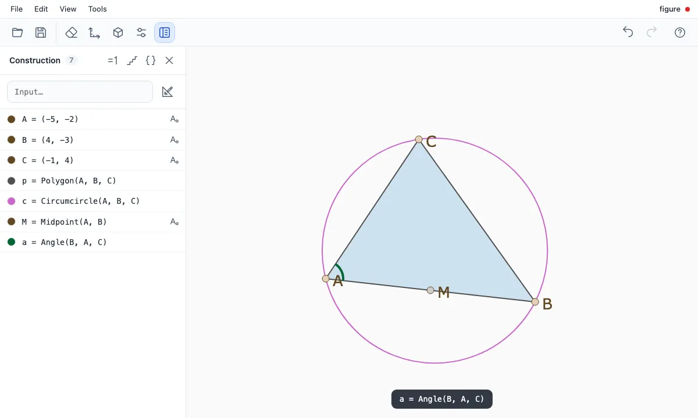
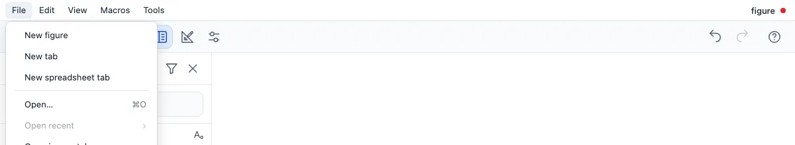

The interface

The menu bar

| Menu | Commands |
|---|---|
| File | New figure, Open… (Ctrl O), Save (Ctrl S), Save as… (Ctrl Shift S) |
| Edit | Undo, Redo, Delete, Eraser |
| View | Axes, 3D view, Construction history, Properties: a check mark shows what is displayed |
| Help | User manual |
On the right, the figure’s file name, in Chrome and Edge (saving). The menu bar does not appear when DocGeo is embedded in another page, such as DocTools.
The action bar
| Button | Role | |
|---|---|---|
| Open |
.dgo, .dgp,
.ggb
|
|
| Save | as .dgo |
|
| Eraser | hide or show objects (eraser) | |
| Axes | axes and grid; in 3D, trihedron and floor | |
| 3D view | switch to space or back to the plane (3D) | |
| Properties | right panel (properties) | |
| Construction | left panel | |
| Undo, Redo | Ctrl Z, Ctrl Shift Z or Ctrl Y | |
| User manual | opens the manual in DocGeo’s language, in a new tab |
In the middle, the context area gives the name and the actions of the selected object.
The “Construction” panel
-
One line per object, in construction order:
M = Midpoint(A, B). Each line can be edited (redefinition). - The dot at the start of a line hides or shows the object; at the end of the line shows its name.
- Header: number of objects, values, step by step, new program.
- The “Input…” line and the button of the tools menu.
- Hovering a line highlights the object, and vice versa.
The prompt
The bubble at the bottom of the figure says what is expected (“Designate a point”), the line the tool is about to write, and errors in red. Its cross ✕ drops the current tool.
Navigating
| Action | Gesture |
|---|---|
| Move the view | drag an empty spot; right button anywhere |
| Zoom | wheel or trackpad, around the pointer |
| Rotate a 3D figure | right button, or one finger on an empty spot |
| Perspective, floor (3D) | P, S |
The round button at the bottom left, present when the figure has animations, pauses or restarts them.
Undoing
Every change is a step of a single stack: construction, deletion, move, style, coordinate system setting, switch to 3D. Zooming, moving and rotating the view are not.
The panels
- Drag their inner edge to resize them; a double-click restores the default width.
- Below 900 px wide, only one panel is open at a time; at 600 px and less, the “Construction” panel starts closed, the properties cover the figure, and choosing a tool closes the panels.